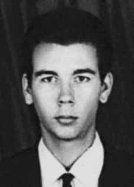

Maurício
Guilherme
da Silveira
CIRCUNSTÂNCIAS DA MORTE
Maurício Guilherme da Silveira morreu no dia 22 de março de 1971, no 1o Batalhão da Polícia do Exército, sede do Destacamento de Operações de Informações – Centro de Operações de Defesa Interna (DOI-CODI) no Rio de Janeiro. De acordo com a versão oficial dos fatos divulgada à época, na esquina da rua Cupertino com a Avenida Suburbana, uma equipe de agentes de Segurança em operação encontrou-se com elementos subversivos, os quais, recebendo ordem de prisão, reagiram a mesma travando-se cerrado tiroteio sendo feridos os terroristas, da VPR, Gerson Theodoro de Oliveira e Maurício Guilherme da Silveira, que faleceram quando eram transportados para o Hospital Salgado Filho.
Passados mais de 40 anos da morte de Maurício Guilherme da Silveira, as investigações realizadas revelaram a existência de indícios que permitem apontar a falsidade da versão divulgada pelos órgãos da repressão, dentre as quais destacam-se as relacionadas abaixo. De acordo com a certidão de óbito expedida por autoridade competente, Maurício Guilherme teria morrido na rua Barão de Mesquita, no 425, que é o mesmo endereço do DOI-CODI, um dos principais centros de detenção e tortura comandados pelo Exército brasileiro.
A informação contida na certidão de óbito foi ratificada pelo Registro de Ocorrência no 1.408, de 22 de março de 1971, em que o capitão Celso Aranha comunica o suposto tiroteio ocorrido na Avenida Suburbana. Embora, na versão divulgada, o tiroteio tenha ocorrido por volta das 11 horas, a comunicação é registrada apenas às 15 horas do mesmo dia. A ocorrência registra que os corpos de Maurício Guilherme e Gerson Theodoro encontravam-se no 1o Batalhão da Polícia do Exército, na rua Barão de Mesquita, n o 425.
No Prontuário nº 50.329, de 23 de março de 1971, expedido pela Secretaria de Segurança Pública do Rio de Janeiro, consta um telex transmitido pelo então tenente Hughesi, lotado no Quartel da Polícia do Exército no Rio de Janeiro, afirmando que a polícia conhecia o “aparelho” utilizado Maurício Guilherme. O telex registra que no dia seguinte à morte de Maurício Guilherme e Gerson Theodoro, os policiais retornaram ao mencionado “aparelho”, o que pode ser entendido como um indício de que os dois militantes da VPR foram presos, conduzidos ao DOI-CODI, torturados e executados.
Pesquisadores da Comissão Nacional da Verdade localizaram no acervo do Arquivo Nacional um documento produzido pelo Departamento Estadual de Ordem Política e Social de São Paulo (DEOPS/SP) que analisa a documentação apreendida no aparelho utilizado pela VPR no Rio de Janeiro. O conteúdo do documento, datado de 30 de junho de 1971, corrobora a tese de que a prisão de Maurício Guilherme e Gerson Theodoro consistiu em uma operação de informações e segurança empreendida pelo DOI-CODI, com o intuito de desmantelar a organização a que os militantes pertenciam.
Registra ainda que, na ocasião, a VPR encontrava-se em franca decadência e que as perdas infligidas à organização pelos órgãos de segurança, especialmente por meio da eliminação de Gerson Theodoro de Oliveira, comandante da Unidade de Combate de Guimarães Brito, estavam abrindo caminho para a captura de Carlos Lamarca, que naquele momento era um dos militantes mais procurados pelas forças de repressão.
As pesquisas documentais demonstraram que, antes da morte, Maurício Guilherme e Gerson Theodoro estavam sendo investigados pelos órgãos de segurança e informações do regime militar, e que a ação de agentes do Estado brasileiro que culminou com a morte dos dois pode ser entendida como parte de uma operação mais ampla que visava desmantelar a VPR. Os restos mortais de Maurício Guilherme da Silveira foram enterrados no Cemitério São Francisco Xavier, no Rio de Janeiro.
Maurício Guilherme da Silveira died on March 22, 1971, in the 1st Army Police Battalion, headquarters of the Information Operations Detachment – Internal Defense Operations Center (DOI-CODI) in Rio de Janeiro. According to the official version of the events published at the time, on the corner of Cupertino Street and Suburbana Avenue, a team of Security agents in operation met with subversive elements, who, upon receiving an arrest order, responded by engaging in a fierce shootout, injuring the terrorists, from VPR, Gerson Theodoro de Oliveira and Maurício Guilherme da Silveira, who died while being transported to the Salgado Filho Hospital.
More than 40 years after the death of Maurício Guilherme da Silveira, the investigations carried out revealed the existence of evidence that allows us to point out the falsehood of the version published by the repression bodies, among which the ones listed below stand out. According to the death certificate issued by the competent authority, Maurício Guilherme died on Rua Barão de Mesquita, no. 425, which is the same address as DOI-CODI, one of the main detention and torture centers run by the Brazilian Army.
The information contained in the death certificate was ratified by Occurrence Record No. 1,408, dated March 22, 1971, in which Captain Celso Aranha reports the alleged shooting that occurred on Avenida Suburbana. Although, in the published version, the shooting took place around 11 am, the communication is only recorded at 3 pm on the same day. The incident records that the bodies of Maurício Guilherme and Gerson Theodoro were in the 1st Battalion of the Army Police, on Rua Barão de Mesquita, no. 425.
In Record No. 50,329, dated March 23, 1971, issued by the Public Security Secretariat of Rio de Janeiro, there is a telex transmitted by the then lieutenant Hughesi, stationed at the Army Police Headquarters in Rio de Janeiro, stating that the police knew the “device” used by Maurício Guilherme. The telex records that the day after the deaths of Maurício Guilherme and Gerson Theodoro, the police returned to the aforementioned “apparatus”, which can be understood as an indication that the two VPR activists were arrested, taken to DOI-CODI, tortured and executed.
Researchers from the National Truth Commission located in the National Archives a document produced by the São Paulo State Department of Political and Social Order (DEOPS/SP) that analyzes the documentation seized from the device used by the VPR in Rio de Janeiro. The content of the document, dated June 30, 1971, corroborates the thesis that the arrest of Maurício Guilherme and Gerson Theodoro consisted of an information and security operation undertaken by DOI-CODI, with the aim of dismantling the organization to which the militants belonged.
It also records that, at the time, the VPR was in clear decline and that the losses inflicted on the organization by the security agencies, especially through the elimination of Gerson Theodoro de Oliveira, commander of the Guimarães Brito Combat Unit, were paving the way for the capture of Carlos Lamarca, who at that time was one of the militants most wanted by the repression forces.
Documentary research demonstrated that, before their deaths, Maurício Guilherme and Gerson Theodoro were being investigated by the security and intelligence agencies of the military regime, and that the action of agents of the Brazilian State that culminated in their deaths can be understood as part of a broader operation that aimed to dismantle the VPR. The mortal remains of Maurício Guilherme da Silveira were buried in the São Francisco Xavier Cemetery, in Rio de Janeiro.
Maurício Guilherme da Silveira murió el 22 de marzo de 1971, en el 1.er Batallón de Policía del Ejército, sede del Destacamento de Operaciones de Información – Centro de Operaciones de Defensa Interna (DOI-CODI), en Río de Janeiro. Según la versión oficial de los hechos publicada en ese momento, en la esquina de la calle Cupertino y la Avenida Suburbana, un equipo de agentes de Seguridad en operación se encontró con elementos subversivos, quienes, al recibir una orden de arresto, respondieron con un feroz tiroteo, hiriendo a los terroristas de la VPR, Gerson Theodoro de Oliveira y Maurício Guilherme da Silveira, quienes murieron mientras eran trasladados al Hospital Salgado Filho.
A más de 40 años de la muerte de Maurício Guilherme da Silveira, las investigaciones realizadas revelaron la existencia de pruebas que permiten señalar la falsedad de la versión publicada por los órganos de represión, entre las que se destacan las que se enumeran a continuación. Según el certificado de defunción emitido por la autoridad competente, Maurício Guilherme falleció en la Rua Barão de Mesquita, no. 425, que es la misma dirección que DOI-CODI, uno de los principales centros de detención y tortura administrados por el ejército brasileño.
La información contenida en el acta de defunción fue ratificada por el Acta de Hecho N° 1.408, de 22 de marzo de 1971, en la que el Capitán Celso Aranha relata el presunto tiroteo ocurrido en la Avenida Suburbana. Si bien, en la versión publicada, el tiroteo tuvo lugar alrededor de las 11 de la mañana, la comunicación recién se registra a las 3 de la tarde del mismo día. El incidente registra que los cuerpos de Maurício Guilherme y Gerson Theodoro se encontraban en el 1.er Batallón de la Policía Militar, en la Rua Barão de Mesquita, no. 425.
En el Acta nº 50.329, de 23 de marzo de 1971, expedida por la Secretaría de Seguridad Pública de Río de Janeiro, consta un télex transmitido por el entonces teniente Hughesi, destinado en la Jefatura de la Policía del Ejército, en Río de Janeiro, afirmando que la policía conocía el “dispositivo” utilizado por Maurício Guilherme. El télex registra que al día siguiente de la muerte de Maurício Guilherme y Gerson Theodoro, la policía regresó al mencionado “aparato”, lo que puede entenderse como una indicación de que los dos activistas del VPR fueron arrestados, llevados al DOI-CODI, torturados y ejecutados.
Investigadores de la Comisión Nacional de la Verdad localizaron en el Archivo Nacional un documento elaborado por el Departamento de Orden Político y Social del Estado de São Paulo (DEOPS/SP) que analiza la documentación incautada del dispositivo utilizado por la VPR en Río de Janeiro. El contenido del documento, de 30 de junio de 1971, corrobora la tesis de que la detención de Maurício Guilherme y Gerson Theodoro consistió en una operación de información y seguridad realizada por el DOI-CODI, con el objetivo de desmantelar la organización a la que pertenecían los militantes.
También registra que, en ese momento, el VPR estaba en franca decadencia y que las pérdidas infligidas a la organización por los organismos de seguridad, especialmente por la eliminación de Gerson Theodoro de Oliveira, comandante de la Unidad de Combate Guimarães Brito, estaban allanando el camino para la captura de Carlos Lamarca, quien en ese momento era uno de los militantes más buscados por las fuerzas de represión.
La investigación documental demostró que, antes de su muerte, Maurício Guilherme y Gerson Theodoro estaban siendo investigados por los organismos de seguridad e inteligencia del régimen militar, y que la acción de agentes del Estado brasileño que culminó con sus muertes puede entenderse como parte de una operación más amplia que tenía como objetivo desmantelar la VPR. Los restos mortales de Maurício Guilherme da Silveira fueron enterrados en el cementerio São Francisco Xavier, en Río de Janeiro.